| Page 1 |
2017美国游学|常青藤名校亲子夏令营
适龄学生：中学生、大学生，家长可报名
游学时间：2017年7月14日—8月2日
【美国皇桥教育集团】广州服务咨询热线：020-61150158
【项目背景】
随着全球贸易以及中国的政治、经济、教育不断进步，各国的教育大门都向中国敞开。美式
教育以其灵活和人性化的课程设置、丰富而又高质量的选修科目在国际上享誉盛名。【常青
藤名校夏令营】带你进入美国新老常青藤名校，感受美国高等学府不一样的学术氛围。在小
班授课的课堂上体会美式教育的生动和老师的启发性授课，在各类特色课程上提高自己的英
语水平及国际文化素养。
【项目背景】
随着全球贸易以及中国的政治、经济、教育不断进步，各国的教育大门都向中国敞开。美式教育以其灵活
和人性化的课程设置、丰富而又高质量的选修科目在国际上享誉盛名。【常青藤名校夏令营】带你进入美
国常青藤名校，感受美国高等学府不一样的学术氛围。在小班授课的课堂上体会美式教育的生动和老师的
启发性授课，在各类特色课程上提高自己的英语水平及国际文化素养。
【项目特色】
【UCLA微型留学体验】学生入读美国顶级公立大学，新常青藤高校联盟成员之一，加利福尼亚大学洛
杉矶分校（UCLA），接受外教全程英文授课课程。同时穿插安排参与学校的课外活动，晚上寄宿UCLA学
生宿舍。
【常青藤名校零距离接触】进入哈佛、耶鲁、普林斯顿、哥伦比亚、宾夕法尼亚大学等美国常青藤名
校，让学生感受名校学术氛围，为学生将来留学择校提供参考。
【深度探访名企&NASA】学生进入谷歌、英特尔等美国名企以及人类太空探索的先锋美国太空总署进
行深度探访。
【美国东西海岸全景游】游学范围覆盖美国东西海岸各大主要城市，包括纽约、华盛顿、洛杉矶、波
士顿等，让学生全面感受美国的自然美景、本土文化、人文景观以及高度发达的现代生活。
| Page 2 |
【行程安排】
D1中国—洛杉矶
乘坐南航国际航班飞往美国西海岸的明珠—天使之城洛杉矶。洛杉矶在建筑、美术、服装、美
容及大众传播等方面都居世界之首。抵达后入住酒店休息。
D2洛杉矶
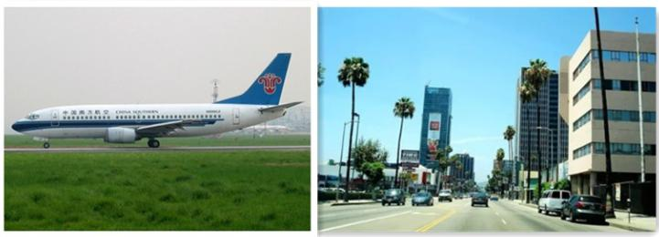全天参观世界著名的影城—好莱坞环球影城，到著名影片的拍摄现场，切实了解电影的制作过
程，亲身体验变形金刚等经典影片场景。参观别开生面的表演秀以及那些让人流连忘返的游乐
设施。晚上前往营地学校，入住学生宿舍。
D3洛杉矶
上午：城市考察，市区拍摄，参观【好莱坞星光大道】，这里的星光大道吸引了无数人来此参观，
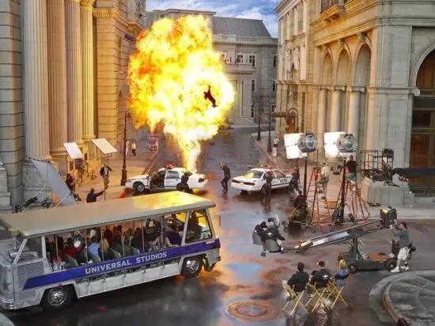路上烙有明星的印记。接着游览【中国戏院】和举办奥斯卡颁奖典礼的【柯达戏院】。
下午前往【加州科学中心】，展馆分为科学殿堂、生命世界、创造力世界、经验积累、穹幕电
影厅等部分，是最受青少年欢迎的场所之一。晚上前往营地学校UCLA，入住学生宿舍。
| Page 3 |
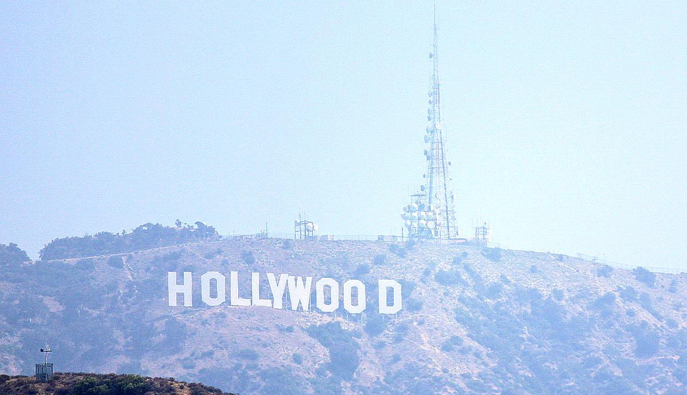
D4-7学生：洛杉矶学校
【中学生团队】
上午：在美国顶尖公立学校,新常青藤联盟成员之一,UCLA，进行生动活泼的ESL
（EnglishasaSecondLanguage）英语课程学习。ESL是外国学生申请美国大学所必修的一门语言
课程。ESL课程包括词汇、写作和口语交流技巧等课程，全程英语授课，不仅可以系统性地扩大
学生词汇量，提高书面表达能力，更重要的是可以养成用英文思维的习惯，摆脱哑巴英语，全
面提升学生的英语听、说、读、写能力。
下午：学术探访。根据学生的不同专业课程需要，对美国大学相关课程进行学术探访，学习美
国先进的教学科研及学习方法。邀请华人留学生座谈，交流申请大学及在美学习和生活的经验。
晚上:住宿学校宿舍
【大学生团队】
上午：在美国顶尖公立学校UCLA,进行美国文化特色课程。对于已经具备相当英语能力的大学生，
更重要的是提高文化素养，为将来海外留学或求职做准备。美国文化特色课程，包括美国文化、
西方礼仪、美式思维训练、美国大学申请指南和美国求职技巧等课程，让学生深入了解美国历
史文化，西方人际交往中的价值观与礼仪，在有针对性的课堂即兴演讲等活动中养成美式思维
习惯，学习申请美国大学与在美国求职的技巧，全面提高学生对美国社会文化的认识。
下午：学术探访。根据学生的不同专业课程需要，对美国大学相关课程进行学术探访，学习美
国先进的教学科研及学习方法。邀请华人留学生座谈，交流申请大学及在美学习和生活的经验。
晚上:住宿学校宿舍
| Page 4 |
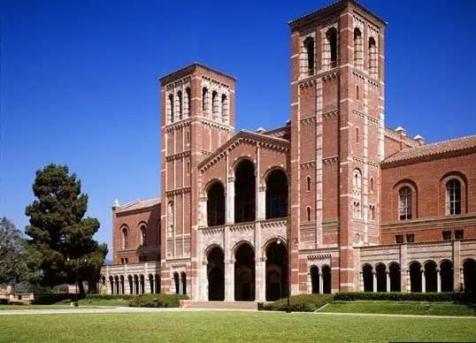
D4家长：拉斯维加斯
早餐后，乘车前往著名沙漠城拉斯维加斯。午后抵达拉斯维加斯，这里有米高梅、威尼斯、巴
黎大铁塔、凯撒王宫、纽约纽约、蒙特卡罗等知名豪华酒店，设计精美的喷泉与塑料。抵达之
后用晚餐，后前往酒店入住。晚上自由活动，您可以细细品味不夜城的魅力所在。入住拉斯酒
店。
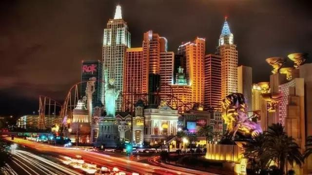D5家长：科罗拉多大峡谷
| Page 5 |
早餐后前往世界七大自然奇景之一的科罗拉多大峡谷。大峡谷国家公园位于亚利桑那州北边，
占地1904平方英里，成立于1919年。大峡谷在1979年纳入联合国教科文组织的世界遗产名单。
晚上住拉斯酒店。
D6家长：PremiumOutlets名品店
早餐后，前往PremiumOutlets名品店购物，PremiumOutlets是离拉斯大道及市中心最近而且规
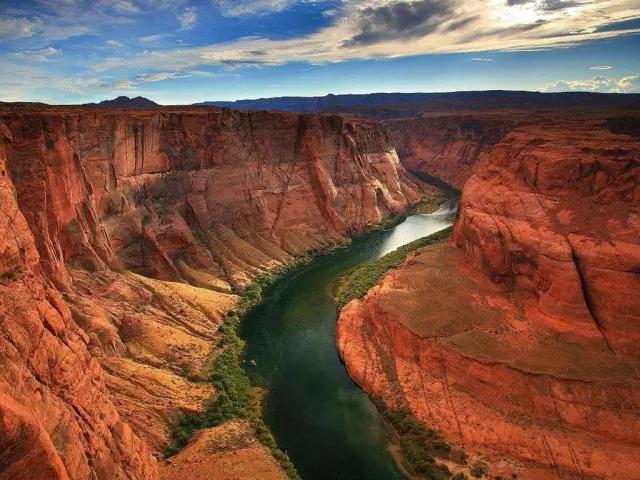模最大的厂家直销中心，2003年正式开业有超过150家厂家直销店，如
Burberry,Coach,CalvinKlein,Ferregamo,Timberland等，而且该购物中心天天提供25%甚至更高
的商品折扣，让慕名而来的游客及当地居民往往能以超低价格买到品质一流的名牌商店。住拉
斯酒店。
| Page 6 |
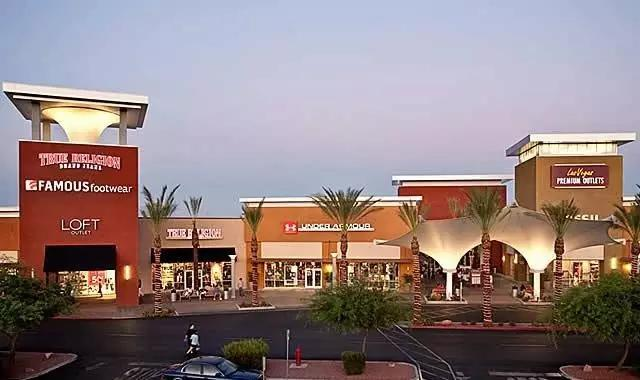
D7家长：比弗利山庄
早餐后，驱车返回洛杉矶，抵达后可参观比弗利山庄。比弗利山庄有”全世界最尊贵住宅区“称号，
是洛杉矶市内最有名的城中城，这里有着全球最高档的商业街，也云集了好莱坞影星们的众多
豪宅，同样还作为影坛的圣地。比弗利山庄每年都会吸引无数来自世界各地的观光客，好奇地
在大街小巷探索。
D8洛杉矶-丹麦城-旧金山
清晨搭巴士自洛杉矶出发。下午到达丹麦城。古老的风车，北欧式的建筑勾勒出小村淡淡的轮
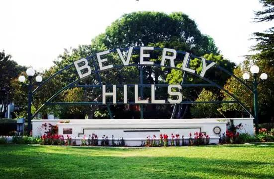廓；灿烂的阳光，一望无际的田野，悠悠的群山，这正是被丹麦移民称之为“太阳峡谷”—丹麦村
的真实写照。小酌一杯香醇的欧洲咖啡，再吃一块闻名于世的丹麦糕饼。傍晚抵达美国西部最
大的金融中心和重要的高新技术研发和制造基地旧金山，入住酒店。
| Page 7 |
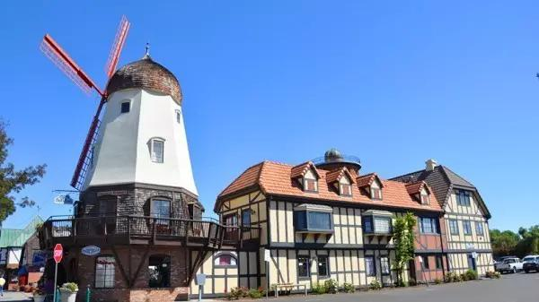
D9旧金山
早餐后前往美国太空总署（NASA）参观，NASA是世界上所有航天和人类太空探险的先锋，被
广泛认为是世界范围内太空机构的领头羊。在这里我们将向大家展示最先进的科技诞生的环境
和过程，树立学生们的创新意识，激发创造热情！之后我们抵达世界最大的晶片生产商英特尔
的驻地，参观其高科技博物馆；随即前往久负盛名的谷歌公司。
D10旧金山
上午：参观访问世界顶尖名校斯坦福大学和加州大学伯克利分校
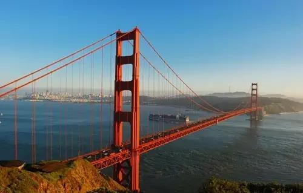下午：市区游览。漫步世界上最弯曲、十分具有艺术气息的街道-九曲花街；在充满欢乐气息的
渔人码头振奋我们的精神；站在唐人街体味历史的悠长；游览联合广场、市政大厦。
| Page 8 |
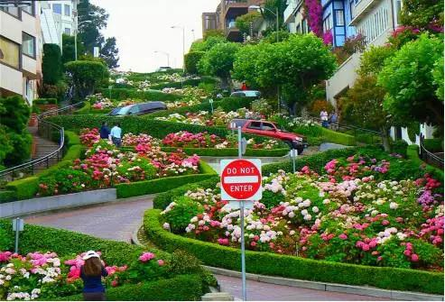
D11旧金山/华盛顿
搭乘飞机前往美国首都华盛顿。华盛顿是美国的政治中心，是大多数美国联邦政府机关与各国
驻美国大使馆的所在地，也是世界银行、国际货币基金和美洲国家组织等国际组织总部的所在
地，拥有众多的博物馆与文化史迹。到达后入住酒店休息。
D12华盛顿
上午：游览华盛顿特区。参观白宫、国会大厦；到目前世界上最大的飞行博物馆—航天航空馆
里，感叹那无穷尽的灿烂苍穹。
| Page 9 |
下午：欣赏饱含浓郁艺术气息，凸现美国人无限创意的国家艺术馆；参观建于1921年的林肯纪
念堂；参观为纪念美国第三任总统托马斯•杰佛逊而建的由新古典式的碟型低屋顶与柱廊构成的
杰佛逊纪念堂。
D13华盛顿-费城-普林斯顿

乘专车前往纽约，途经美国古都，途经美国古都-兄弟之爱之城-费城参观。在发表独立宣言的费
城参观独宫、自由钟以及旧国会大厦，体会争取自由与民族独立的艰辛和喜悦。之后参观宾夕
法尼亚大学和普林斯顿大学。
D14普林斯顿-波士顿
乘车前往美国最古老的城市波士顿，途中参观与哈佛、普林斯顿大学齐名的耶鲁大学，体会她
的美丽与庄严。
| Page 10 |
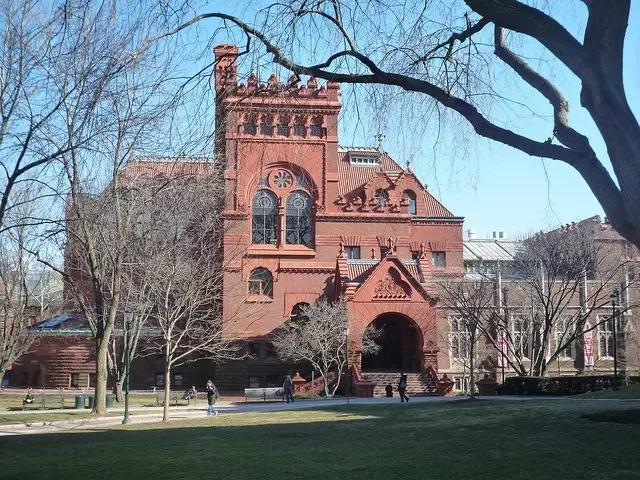
D15波士顿
上午：前往参观有三百多年发展史的哈佛大学，学生们在学校代表的引领下深度访问名校，学
校代表将带领大家参观哈佛大学校园并讲解，帮助同学们了解学校历史，教学理念，申请条件
等，感受百年老校的历史文化气息。
下午：参观麻省理工学院，漫步于校园，感受具有“世界理工大学之最”称号的名校氛围。之后前
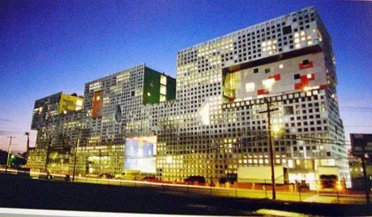往波士顿市区，晚上入住波士顿酒店。
| Page 11 |
D16波士顿-纽约
上午：乘车前往纽约,纽约是全球最大的都市经济体，同时也是美国政治、经济、文化及交通等
领域的枢纽中心，直接影响着全球的媒体、政治、教育、娱乐以及时尚界。被称为“世界级城市”。
下午：参观美国的标志性建筑自由女神岛。美国纽约市一岛屿，在上纽约湾内，隔水与曼哈顿
岛南端相望。面积约4公顷，为巴托尔迪的“普照世界的自由之神”像和美国移民博物馆所在地。
D17纽约
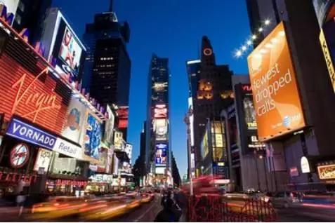上午：参观哥伦比亚大学，其成立于1754年，属于私立的美国常春藤盟校。其新闻学院颁发的
普利策奖是美国新闻界的最高荣誉。
下午：踏上“美国的金融中心”华尔街，参观联合国总部大厦，洛克菲勒中心，第五大道，时代广
场。深刻体会纽约这座国际化大都市的繁华与浓厚的商业气息。
| Page 12 |
D18纽约
上午：参观素有“美国将军的摇篮”之称-西点军校。西点军校是美国历史最悠久的军事学院之一。
它曾与英国桑赫斯特皇家军事学院、俄罗斯伏龙芝军事学院以及法国圣西尔军校并称世界“四大
军校”。
下午：乘车前往著名的名牌商品工厂店，在这里可以用比在中国至少便宜1/3的价格购买到心
仪的Nike、阿迪达斯、锐步等名牌商品，价廉物美，保证有意想不到的收获，为自己和家人带
回欢乐的记忆。
D19纽约-中国
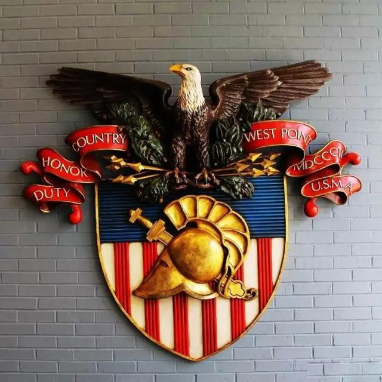搭乘国际航班返回中国。
| Page 13 |
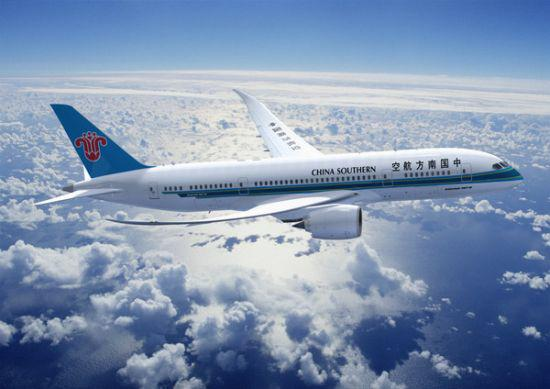
D20抵达中国
团费学生42800元/人
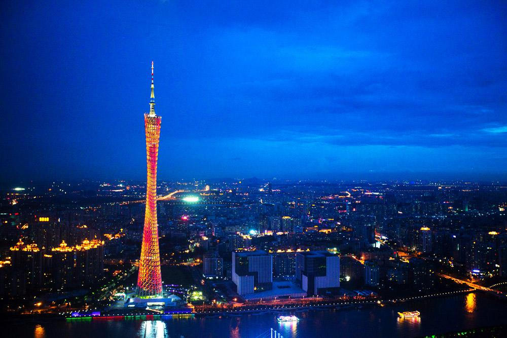团费家长38800元/人
| Page 14 |
、
戏
宵
更
引
的
团费包含
1.往返国际机票和行程中提到的美国境内段机票费用
2.课程培训费
3.行程中提到的公司考察的费用
4.行程中包含的景点第一门票
5.常规团队早餐
6.常规团队正餐
7.全程常规三星级酒店标准间住宿
8.空调巴士
9.每日饮用矿泉水
10.境外旅游保险
11.小费
团费不含
1.行李托运，行李超重等费用；
2.酒店一切私人费用，包括：洗衣、电话、传真、上网、收费电视节目
水、邮寄、机场和酒店行李搬运服务等费用；
3.因气候或飞机、车辆、船只等交通工具发生故障导致时间延误或行程
失和责任；
4.因个人原因滞留产生的一切费用；
5.签证费（如需代办签证，需另付支付1500元代办签证服务费用）；
6.上述“报价包含”条款中未列明的一切额外费用。
游
改
、
起
夜、酒
经济损